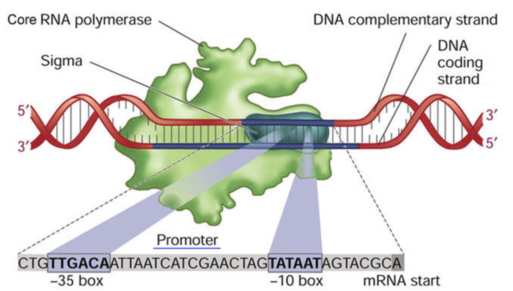

Enzymes that initiate a new RNA chain on a DNA template
There are RNA-directed RNA polymerases as well — but they are a virus’s business, not a catalogue item
RNA polymerases are enzymes that initiate a new RNA chain on a DNA template. Deal with the second line and then set it aside: RNA-directed RNA polymerases do exist, every RNA virus has to carry one because no host enzyme will copy RNA into RNA for it, and that is exactly why they make such good antiviral drug targets. But there is no bottle of one in the freezer and nothing in this course uses it, so from here on, RNA polymerase means DNA in, RNA out. Of those you are likely to meet two. First is the one that produces the RNAs in the cell, and the other is T7 RNA polymerase. Though the native enzyme is important to understand in the context of gene expression, only the phage one is commonly used in vitro. Hold on to the word initiate. It is what separates this whole section from the last one.
Section divider: RNA Polymerases, defining them as enzymes that initiate a new RNA chain on a DNA template.
No Primer
Every enzyme so far could only extend an end that already existed
The T7 Promoter and the +1 Site
Seventeen bases, quoted on the non-template strand
In Vitro Transcription
The Native System: Sigma Factors
Core RNA polymerase cannot find a promoter — a σ factor finds it for the enzyme
σ70 reads two elements: TTGACA at −35 and TATAAT at −10, a spacer apart

From the course tutorials
This is how it works without you. E. coli’s own RNA polymerase is a multi-subunit machine, and the core enzyme on its own cannot find a promoter at all — it will transcribe, but it does not know where to start. A sigma factor is what gives it an address. Sigma seventy is the housekeeping one, the one reading most genes most of the time, and it recognises two short elements rather than one contiguous block: TTGACA about thirty-five bases upstream of the start, and TATAAT about ten bases upstream, with a spacer between them that has to be roughly the right length. Both elements matter, and so does the spacing, which is why an E. coli promoter is harder to write down than a T7 promoter. Now the part worth carrying: sigma seventy is not the only one. E. coli has several sigma factors, and swapping which sigma is loaded swaps which genes get read. Sigma thirty-two runs the heat shock response, sigma thirty-eight takes over in stationary phase, sigma fifty-four handles nitrogen, sigma twenty-eight makes flagella. Same core enzyme every time. The specificity lives in an interchangeable subunit, which is a rather elegant way to run a cell and, as we are about to see, is also why moving a promoter between organisms is not a safe assumption.
A diagram of E. coli RNA polymerase bound to a promoter. The core enzyme is drawn as a large shape wrapped around double-stranded DNA, with the sigma subunit picked out inside it. Below, the promoter sequence is expanded to show the minus 35 box, TTGACA, and the minus 10 box, TATAAT, separated by a spacer, with the mRNA start site marked downstream of them.
BL21(λDE3) and the pET Vector
A T7 promoter is inert in E. coli — nothing in the cell can read it
So the strain carries the reader, and you supply the gene
From the course tutorials — the pET–INS design
Here is what orthogonality buys you, and it is the whole reason T7 took over the catalogue. Neither polymerase can read the other’s promoter. The E. coli enzyme is looking for a minus thirty-five and a minus ten with a spacer; T7 RNA polymerase is looking for seventeen contiguous bases and nothing else. So a T7 promoter dropped into an E. coli cell does nothing whatsoever. It is a switch the cell does not own. To use it you have to put the reader in as well, and that is exactly what BL21 lambda DE3 is: an E. coli strain carrying a copy of the T7 RNA polymerase gene in its own genome, under a lac promoter. Your gene goes on a pET plasmid downstream of a T7 promoter, and the plasmid also carries lacI. So in the uninduced state LacI sits on both operators and nothing happens: no polymerase, and no transcription of your gene even if there were. Add IPTG and LacI lets go of both. The cell makes T7 RNA polymerase, the polymerase finds the T7 promoter on your plasmid, and because it is a fast processive enzyme with nothing else to do, your gene can become a large fraction of the protein in the cell. Two levels of control, one induction. And this exact construction — human insulin into a pET vector, expressed in BL21 — is the first design tutorial you will do, so you are looking at your own next assignment.
A diagram of a BL21 lambda DE3 cell. Its genome carries the T7 RNA polymerase gene under a lac promoter, repressed by LacI. Inside the cell a pET plasmid carries the insulin gene downstream of a T7 promoter with a lac operator, and a lacI gene. IPTG relieves the repressor at both promoters.
Transcription Does Not Travel Well
Even E. coli and B. subtilis read different promoters — so you move the message, not the gene